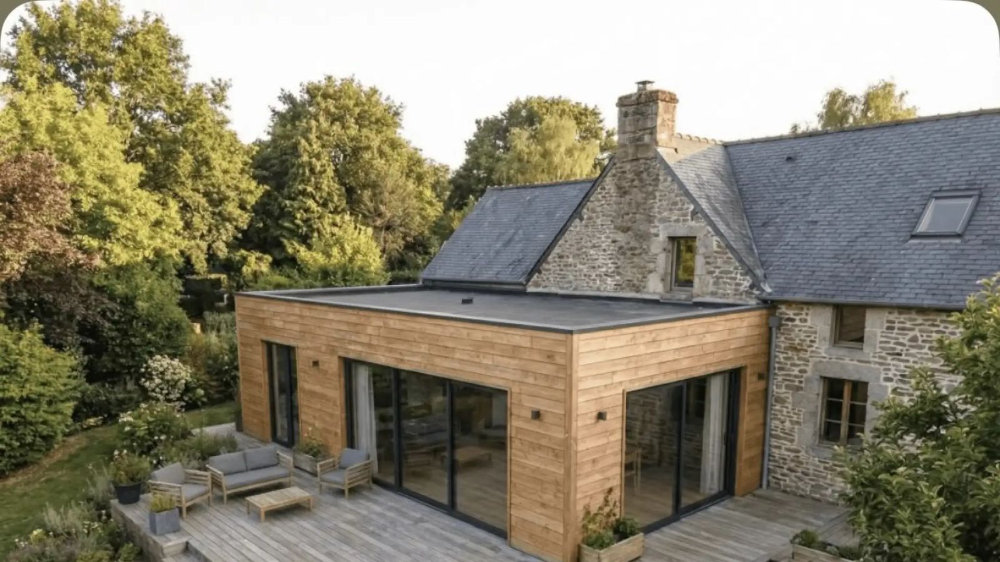
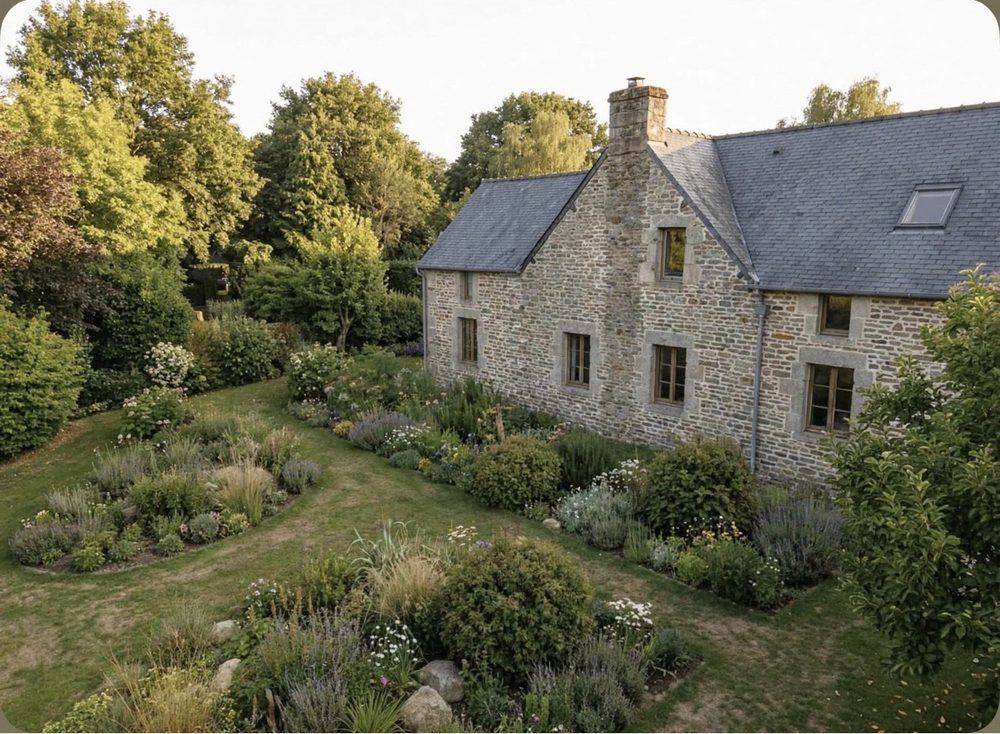
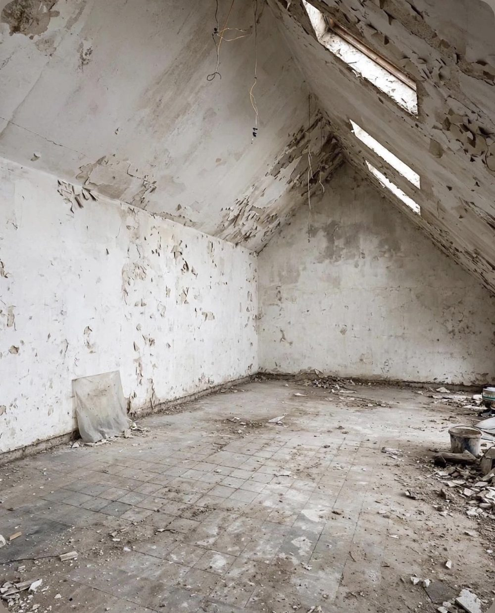
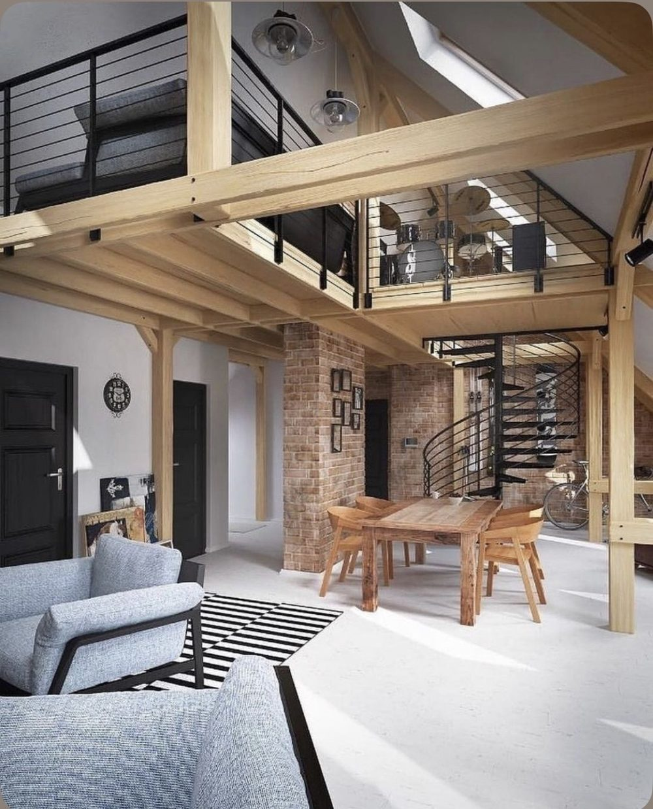
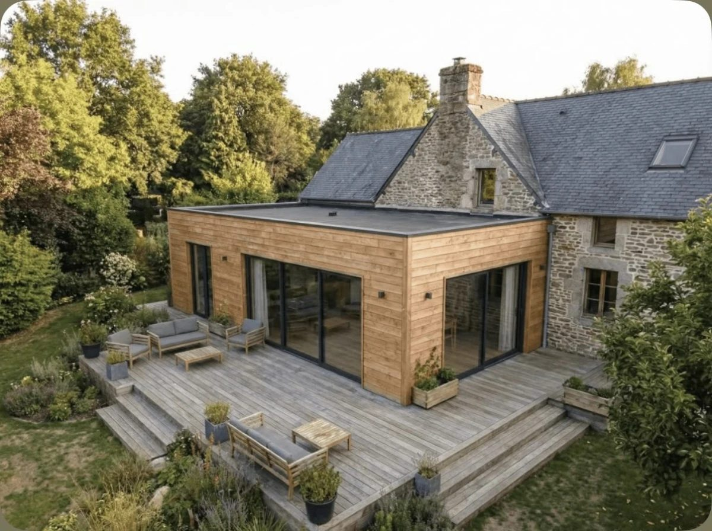
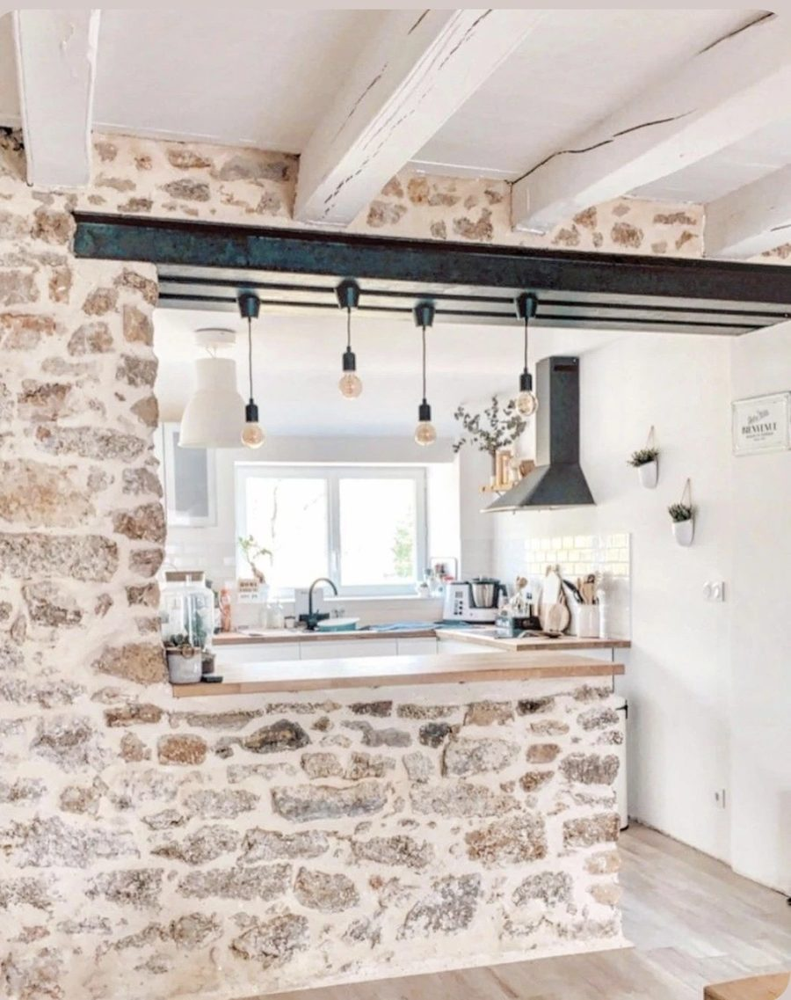

Murs et élévation
Élévation de murs en parpaings, briques ou béton cellulaire, murs de clôture, murets et piliers, en construction neuve comme en rénovation.
Demander un devis
Murs, dalles, ouvertures dans les murs porteurs, extensions et surélévations, terrassement : nous prenons en charge vos travaux de maçonnerie en Loire-Atlantique et dans le nord de la Vendée, avec un seul interlocuteur du devis à la réception du chantier.
Maçonnerie neuve ou reprise sur l'existant, pour les particuliers, les professionnels et les collectivités.
Élévation de murs en parpaings, briques ou béton cellulaire, murs de clôture, murets et piliers, en construction neuve comme en rénovation.
Demander un devisCréation ou agrandissement d'une baie, d'une porte ou d'une fenêtre, pose de linteau ou de poutre métallique après étude de la structure.
Demander un devisFondations, dalle béton et chape pour une maison, un garage, une annexe ou une terrasse, avec préparation du sol adaptée au terrain.
Demander un devisAgrandissement latéral ou surélévation de toiture, du gros œuvre à la finition, en continuité avec l'existant. Pilotage clé en main.
Demander un devisPréparation du terrain, fouilles pour fondations, tranchées et réseaux, mise en place ou remplacement de l'assainissement.
Demander un devisReprise de maçonnerie ancienne, rejointoiement de murs en pierre, finitions, démolition et préparation de chantier avant rénovation lourde.
Demander un devisNous intervenons de la conception à la réception des travaux, sur des chantiers de maçonnerie neuve, d'agrandissement ou de rénovation lourde.
Demander un devis gratuitVous n'avez qu'un seul contact : nous établissons le devis, planifions les interventions, coordonnons les corps de métier et suivons le chantier jusqu'à la réception.
Chaque poste est chiffré par écrit. Lorsque plusieurs entreprises interviennent, nous comparons les devis et vérifions leurs qualifications et assurances.
Nous contrôlons la qualité, la sécurité et la conformité des travaux aux normes en vigueur, à chaque étape du chantier.
Du lundi au dimanche, de 7 h à 20 h, par téléphone ou par le formulaire. Devis gratuit, sans engagement.
Vous nous appelez ou remplissez le formulaire. Nous échangeons sur votre projet, vos contraintes et vos délais.
Nous nous déplaçons sur place pour mesurer, vérifier l'existant et l'accès, puis vous remettons un devis détaillé et gratuit.
Une fois le devis signé, nous planifions les travaux, les autorisations si nécessaire et l'intervention de chaque corps de métier.
Nous suivons le chantier régulièrement, contrôlons la qualité et la conformité, et vous livrons un chantier propre.
Faites glisser le curseur pour comparer.

 AvantAprès
AvantAprès


AvantAprès


« Nous sommes satisfaits du travail de maçonnerie effectué. De plus, Corentin Douillard est très sympathique. »
« Très satisfaite du travail réalisé sur mes deux chantiers de ravalement de façades. Ces derniers ont été menés de main de maître par le chef d'équipe. »
« Un excellent conseil, des délais très courts respectés, pour une réalisation et une finition impeccables, avec une finition de chantier parfaite. »
« J'ai fait appel à cette entreprise de rénovation-construction pour effectuer un agrandissement, je recommande vivement. »
Témoignages publiés sur larenovationdevosreves.fr.
Installés à Sainte-Pazanne, nous intervenons dans toute la Loire-Atlantique et dans le nord de la Vendée, chez les particuliers, les professionnels et les collectivités.
Une extension ou une surélévation nécessite une déclaration préalable de travaux ou un permis de construire selon la surface créée et le plan local d'urbanisme de votre commune. Une ouverture en façade demande en général une déclaration préalable. Nous vous indiquons la démarche à suivre lors de la visite et préparons les éléments techniques du dossier.
Le prix dépend de la nature des travaux (mur, dalle, ouverture, extension), des matériaux, de l'accès au chantier et de l'état de l'existant. C'est pourquoi nous nous déplaçons avant de chiffrer : le devis est gratuit, détaillé poste par poste, et sans engagement.
Oui. Reprise de murs, rejointoiement, ouvertures dans des murs en pierre ou en moellons, extension en continuité avec l'existant : nous adaptons les matériaux et les techniques au bâti ancien, fréquent en Loire-Atlantique et sur le littoral.
La création d'une ouverture dans un mur porteur passe par une étude de la structure, un étaiement pendant les travaux et la pose d'un linteau ou d'une poutre métallique dimensionnés pour reprendre les charges. Nous organisons ces étapes et les contrôles associés.
L'évacuation des gravats et des matériaux de démolition est prévue dans le devis. Ils sont triés et déposés en déchetterie professionnelle ou en filière de recyclage. Le chantier est nettoyé à la fin des travaux.
Oui. Nous accompagnons les particuliers, les entreprises (locaux, bureaux, commerces) et les collectivités dans leurs projets de construction, d'agrandissement et de rénovation, avec les mêmes étapes : visite, devis détaillé, planification, suivi et réception.
Décrivez vos travaux en quelques lignes, nous vous rappelons pour convenir d'une visite sur place.